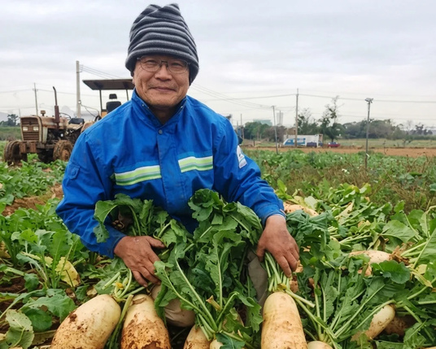
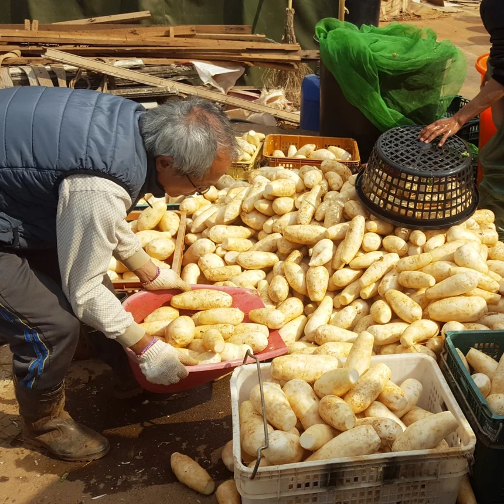
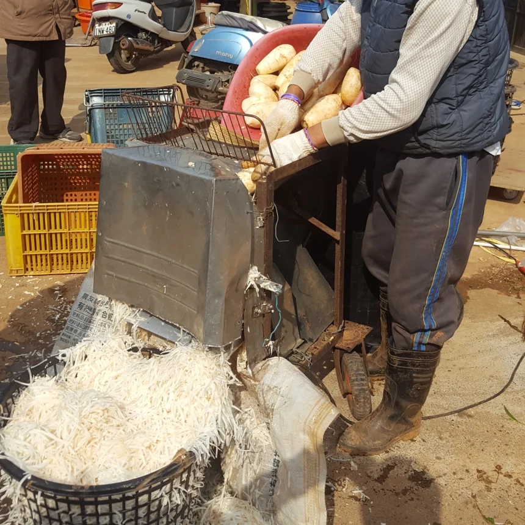

條仔脯
整條蘿蔔手選、鹽醃、反覆翻曬，適合煮湯與泡茶。
無加鹽蘿蔔絲
一絲一絲的白蘿蔔，沒有加鹽。秋冬有合適的風，並有人在旁照看翻曬，就能留住蘿蔔的鮮甜。

從田裡開始
清水大肚山一帶的紅土排水好，秋冬蘿蔔長得慢，甜度和纖維都更紮實。做菜脯米尤其挑蘿蔔的纖維。纖維太弱，刨成絲乾了以後，風一來就可能被吹光。

風乾製程
菜脯米的做法跟條仔脯、切脯差很多。洗淨、刨絲就直接鋪曬，省去了揉鹽和入甕醃製的工序。
形狀不整齊或大小不一的蘿蔔也能用，挑的是纖維夠紮實的秋冬蘿蔔。
沖洗外皮和表面的泥沙，再把碰傷或不合適的部分修掉。

太粗，鋪開也不好乾；太細，乾了之後一陣風就可能吹走。

在洗乾淨的場地攤平，視乾燥情形翻上幾回。像新竹米粉一樣，關鍵是風能帶走濕氣；太大的日頭也未必適合。

切得太粗不易乾，太細又容易被吹走。風、濕度和刨絲的粗細，都影響收成。
製程影片
菜脯埕原站的田間與製作紀錄。點選影片即可播放。